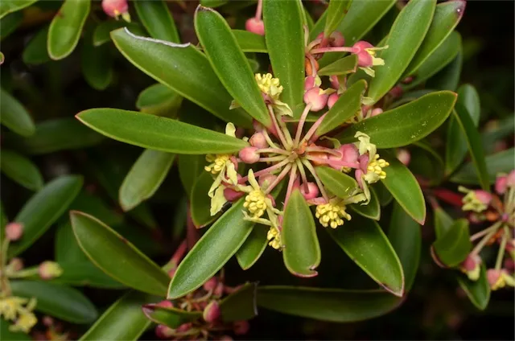

Wild fruit · Mar–May
Mountain pepper
Tasmannia lanceolata
Also called Tasmanian pepperberry
Mountain pepper is a wild fruit you can forage from March to May in Tasmania and Temperate south-east. Shrub of cool forests with red stems; glossy black berries and leaves with a hot, peppery bite.

When is mountain pepper in season in Australia?
Mountain pepper is usually in season March to May. Timing shifts with weather, latitude and altitude.
Where does mountain pepper grow in Australia?
Mountain pepper grows in Australian Capital Territory, New South Wales, South Australia, Tasmania, Victoria. Regions: Tasmania, Temperate south-east.
How do you recognise mountain pepper?
Shrub of cool forests with red stems; glossy black berries and leaves with a hot, peppery bite.
How do you harvest mountain pepper?
Pick only fully ripe fruit that comes away easily, into a shallow container so it doesn't crush. Leave plenty on the plant for birds and wildlife.
How do you eat mountain pepper?
Berries and leaves as pepper.
How do you store mountain pepper?
Dry.
What can you cook with mountain pepper?
- Bush tomato kangaroo: Kangaroo fillet with a bush tomato and pepperberry rub.